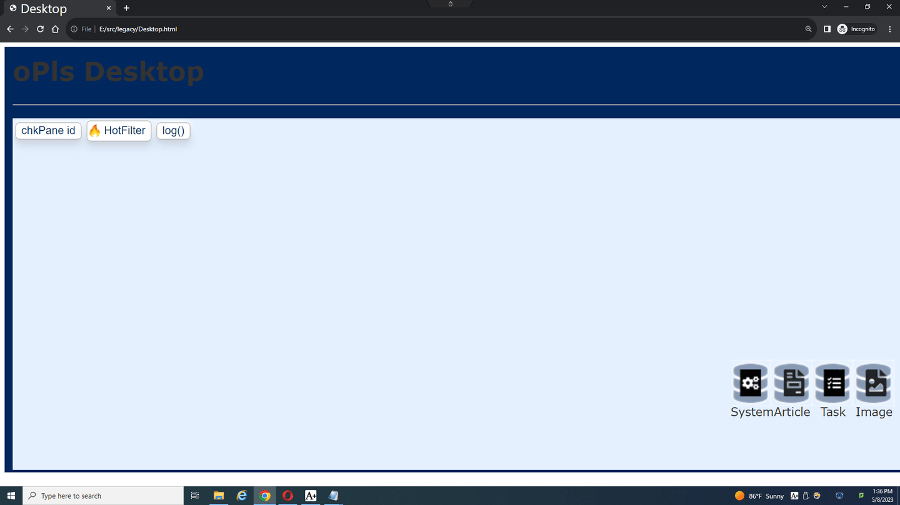
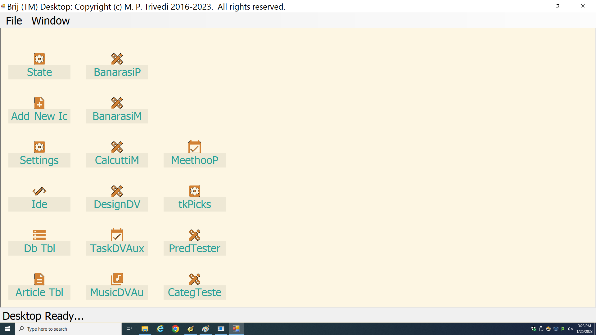
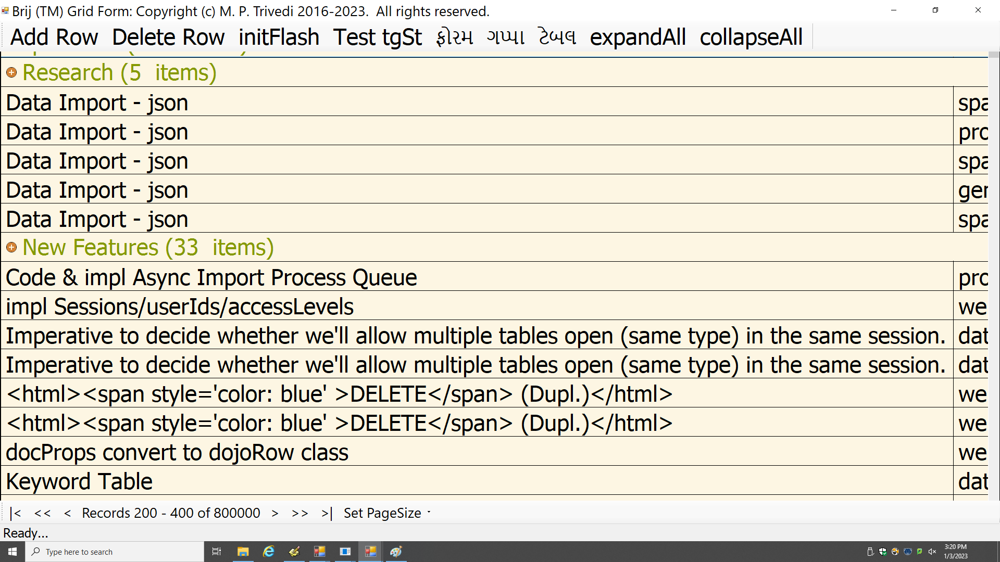
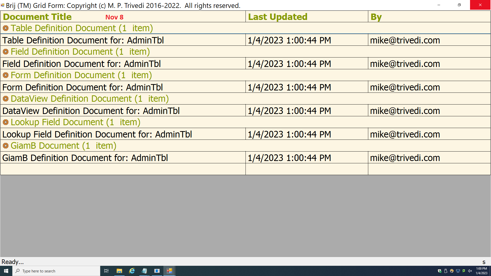
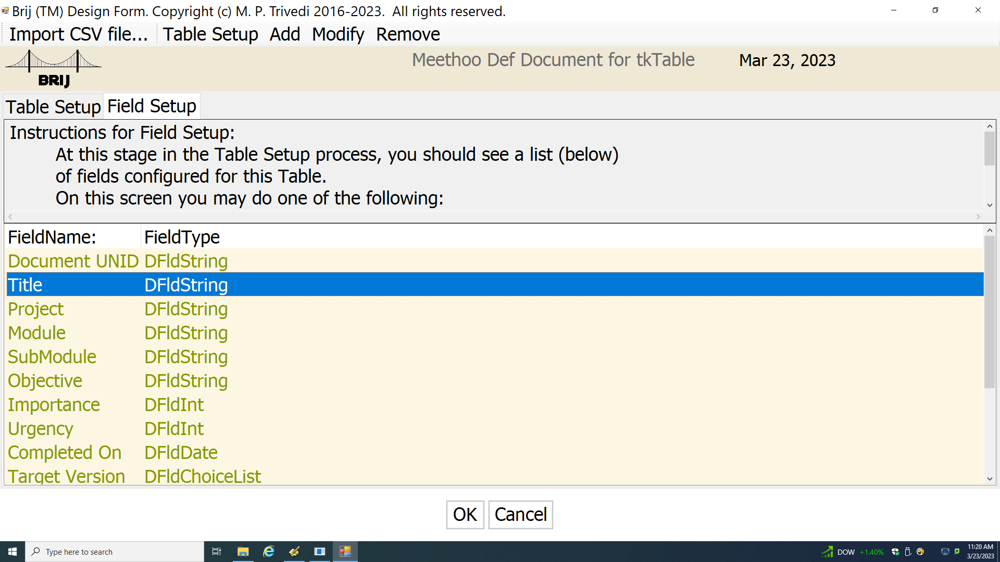
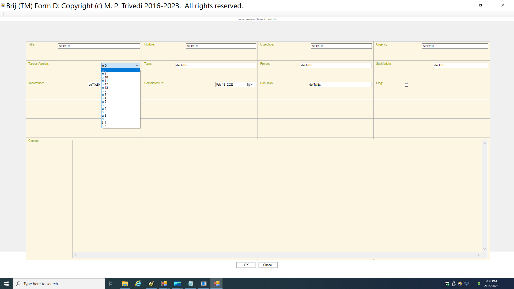
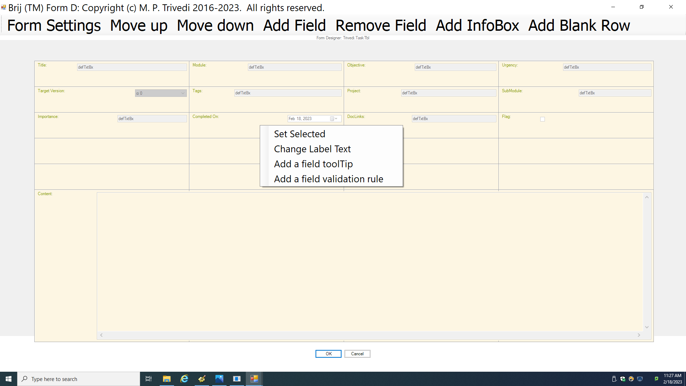
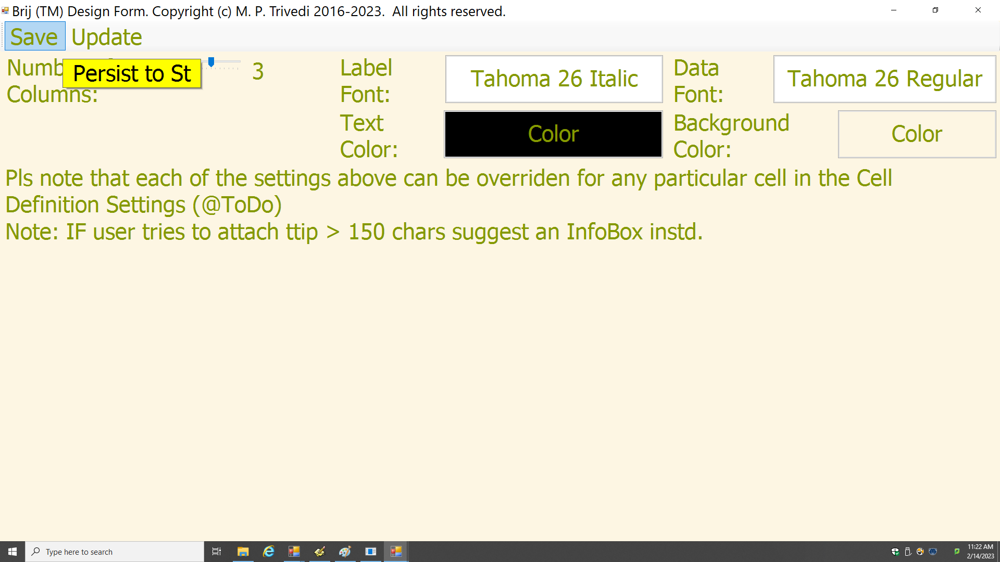
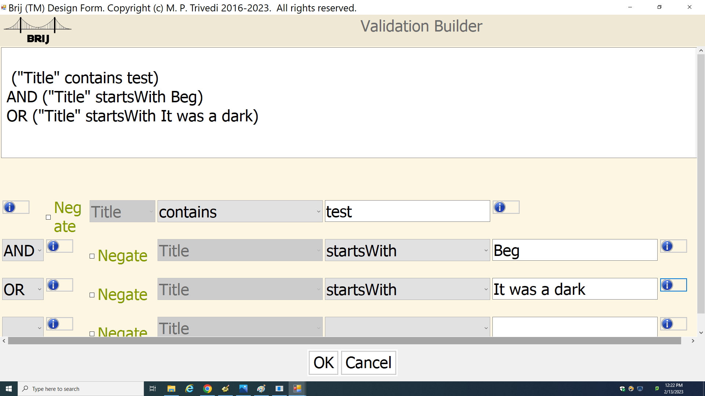
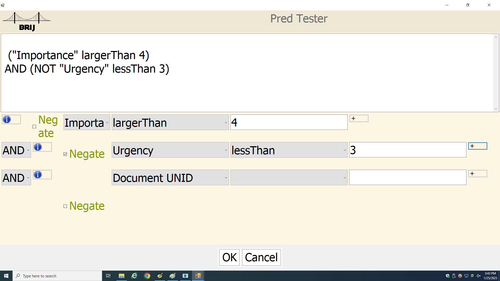

Product:Details/Snapshots
The Skinny
The Brij system has the following three crucial elements
Table Definition Document
Each Table contains a single TDD(Table Definition Document). This is essentially a definition of the Table's Schema.
The TDD allows the User to create/edit/update fieldNames and fieldTypes (e.g. Currency, Date, String...)
Form Definition Document
Each Table contains one or many FDDs (Form Definition Documents). Typically a User will choose a few fields (from the TDD) to add to a form, and Brij will auto-generate a Form.
Then the user can make whatever changes she wishes to the Form, including moving fields, changing font/color/emphasis, making UI widgets wider or taller, adding explanatory text, etc.
Query Definition Document
Each Table contains one or many QDDs (Query Definition Documents). Typically a User will choose a few fields (from the TDD) to include in a query, and specify one/more Grouping criteria, a Filter, and one/more Sorting criteria.
The QDD is a live document: every time a user double-clicks on a QDD (unless in Design mode) it will execute a Query and return data in a DataView.
The Details
The Brij Desktop
| Desktop Iteration I |
|---|
|  |
This is the Desktop from the Early Stage
2018 - Dojo FrontEnd (JavaScript) - In-Mem Java BackEnd - Eclipse Jetty Server
| Desktop Iteration III |
|---|
|  |
This is the F# Desktop with the Sublime UI scheme.
Current - dotNet FrontEnd (WinForms) - MongoDb BackEnd - dotNet SignalR Server
- The Bridge Desktop shows a single icon for each Table in the user's
Brijaccount. Every user has the ability to add or remove icons (saved in User Profile). - This screenshot shows various icons which are for Development use and will not appear in the Demo. There will be only about five icons for Demo Tables, plus an icon titled: "Add New Icon".
- A Double-click on any Desktop icon opens up a DataView in ReadMode, as shown below. If the table contains more than one DataView, the user may specify which one to use as a 'default' view.
- A Right-click on any Desktop icon allows the user to open up the table's DesignView.
- The Window menu allows the user to change the UI color scheme etc.
The Brij DataView
| DataView Iteration I |
|---|
| DataView Iteration II |
|---|
| DataView Iteration III |
|---|
|  |
- The screenshot above shows a demo (taskList) table's
DataView. - The sections in green with a + icon to the left are called Categories. This DataView's designer has chosen to Categorize (Group) all the records by a field named SubModule
- Clicking on the + icon will toggle the
Categoryto expanded (showing all grouped records) or collapsed (only showing the Category Title plus number of records in the group). Individual categories can be expanded/collapsed, and the user also has the option to click on the "Expand All" or "Collapse All" button. - Double-clicking on any row opens up the Document chosen with the default Form configured for this table.
- Eventually this screen will house a create button on the top row to allow the user to create a new document using a blank Form.
- The Paging Control on the bottom of the screen will allow the user to customize the PageSize (how many documents are retrieved at a time) and will allow him to navigate through the database. Each click (on each arrow button) will send a new Query to the server and display a new set of documents.
The Brij Design DataView
| DesignView Iteration III |
|---|
|  |
- The screenshot above shows a demo (taskList) table's
Design DataView. - All the Table Design Documents are shown in this View.
- Even though this snapshot only shows one document per Category, a Table has only one Table Definition Document but can have unlimited design documents for Forms, Fields, Queries (DataView Definition), Lookup Fields, etc.
- The user can double-click on any document to edit that Document; and can create copies or rename/delete any document here.
- The user can also set a default form or view for a Table here.
- Each record in a Brij Table is a Document, and the Table Design itself consists of Documents with configuration information. When a user creates a Form and sets it as the Default Form, the next time they double click on a row in a DataView they will see the newly created Form with all the data populated.
The Brij Table Designer

- The screenshot above shows the TableDesigner for a demo (taskList)
Table Definition Document. - If the user has just created a new Table, under the Table Setup tab they would have two choices:
- Import a CSV File
- Manually configure the table (by entering Field Names and choosing Field Types) The documentation will explain to the user that Fields are analogous to Excel Columns
- The Field Setup tab allows users to change the Schema of the table. (add new fields/rename existing fields/remove fields)
The Brij Form View
| FormView Iteration II |
|---|
| FormView Iteration III |
|---|
|  |
- The screenshot above shows a demo (taskList) table's Form.
- This Form has been designed by the user herself (and auto-generated by
Brij). It displays all the fields included in the Form Design Document - If the user opened the form from a DataView it will be in Read Mode. A button will allow the user to enter Edit Mode and make changes to the Document. If the OK button is clicked the changes will be saved on the server.
The Brij Form Designer

- The screenshot above shows a demo Form in Design mode.
- This Form is WYSIWYG: if the user makes a cell broader or taller the Form will instantly update.
- This form has been configured (via the "Form Settings" button above) to have four columns.
- The last field in the form - titled 'Content' - is a
LargeTextField; therefore it spans the complete width of the form. - The user can configure any Cell in this form for custom behavior. The user may make any field
- move around in the Form (moves a cell up/down/left/right)
- wider/narrower
- taller/shorter
- use a custom color/font
- use a custom Label text
- use a custom Widget used to display the field data (for instance, a Date could be displayed simply as text or as a control which shows a calendar)
- display a custom ToolTip
- have a custom Validation rule (e.g., "no blanks allowed" or "must only contain digits")
- The user can also add blank rows or informational messages (e.g. "This field is required") to aid the person using the form to enter data.
- Clicking on the Form Settings button allows the user to set default appearance settings for the entire form (Appearance Tab), as shown below
The Brij Form Builder: Appearance Tab

- The screenshot above shows the settings available for the Form appearance, including the number of columns.
- Changing any setting may be done at any time and the newly generated forms will be automatically updated.
The Brij Validation Rule Builder

- The screenshot above shows the Validation Rule Builder.
- In the previous screen (Form Designer) the user chose to add a Validaton Rule for a field.
- Notice that the Field dropdown is set to "Title"; automatically set up (no scope for error) and unEditable.
- The user may add as many conditions as she wants. The Condition dropdown (here showing 'contains', 'startswith', etc.) automatically display only the appropriate conditions for the field chosen, which here has type String. Again, no chance for user error to build an illegal rule.
- In this screen the user simply chooses a Condition (e.g., 'contains') and enters the criteria (e.g., "It was a dark"). The
Brijsystem autogenerates the expression shown on top of the window. The user may add, change or delete any condition and the overall expression automatically updates. - Basically the user builds complicated rules without scripting or coding anything - it is all entirely point-and-click.
- This validation rule is saved in the Table Design. The user may change/update it whenever they wish.
The Brij Filter Definition Builder

- The screenshot above shows the Filter Definition Builder.
- While building a Query Definition, the user needs to supply a filter (e.g., "CardType = 'Visa'"). This screen shows how the user builds that Filter.
- Basically this screen is almost exactly like the Validation Rule Builder, except it allows the user to choose to filter by any field.
- Please note that this snapshot displays an earlier version of the RuleBuilder. The current version uses a top-down recursive
parserand is much more sophisticated. The new version also allows "power" users to manually edit the condition because it has sophisticated error-reporting.
Other screens
Brij has some other screens already designed and coded and some which remain to be designed (e.g. Lookup Field Design, Calculated Field Design), but these are the main ones and should give you an indication of:
- How effortlessly a user can use the entire system, and
- How the program generally flows.